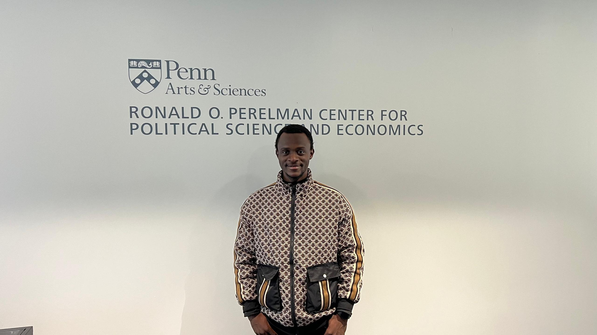

Economist · Penn PDRI-DevLab Alumnus · PhD Applicant
University of Pennsylvania · Philadelphia, PA
I study how climate extremes, economic shocks, and structural stressors shape conflict, migration, and welfare — with a focus on low- and middle-income countries in Africa, Central America, and South Asia.

My work sits at the intersection of climate science, political economy, and development economics, using high-frequency data and causal inference methods.
Linking climate extremes and economic stressors to conflict dynamics in Central America, West Africa, and South Asia using distributed-lag panel fixed-effects models.
Examining food security, governance, and social cohesion through household-level survey data across Sub-Saharan Africa.
Understanding how El Niño/La Niña cycles shape agricultural productivity, food prices, and migration flows in Central America's Dry Corridor.
Applying NLP and ML methods to large-scale news corpora and geospatial data to generate high-frequency conflict and political event datasets.
Open to research collaborations, pre-doctoral inquiries, and PhD opportunities.